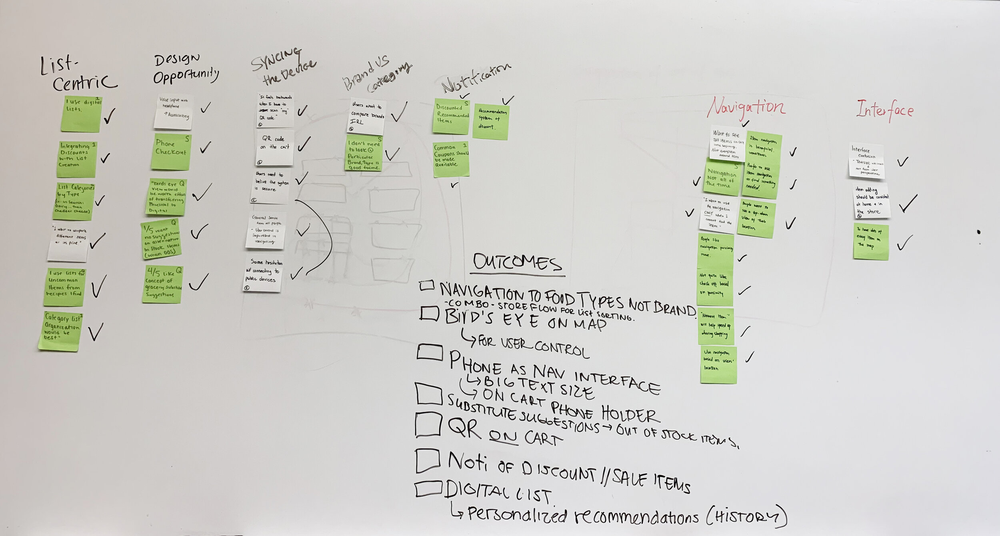

OVERVIEW
A project in Improving grocery shopping with pervasive interaction design methods.
MY ROLE
UI/UX Designer
Prototype Engineer
TEAM
Youngmin Kim, User Research
Jackson Hammond, Project Managment
Chen Liang, User Research
TIMELINE
September 2019 - December 2019
PROBLEM
Where the heck are the Pickles?
I don’t know about you, but most of my grocery trips now-a-days look something like this:
In our information age, ethically applying ubiquitous computing and sensor based technologies to a grocery shopping experience could save users time and money while enhancing efficiency for both users and employees. People want to enjoy their shopping experience but often become frustrated because:
1. They are not familiar with the layout of stores.
2. Keeping track of sales and coupons is difficult.
RESEARCH
How may we help you?
82% of US adults go grocery shopping at a grocery store at least once a week according to a recent Gallup poll. We obsserved shoppers and employees at grocery stores in suburban Detroit to understand our design space.
After initial observations, we created a cultural probe. The below workbook allowed us to understand positives and pain points in grocery shopping.
The real problem we noted was that shoppers had difficulties in finding every last item or remembering to pick up items along the way forcing them to backtrack through the store, wasting time. If shoppers were not familiar with the grocery store, it took a long time to find what they wanted. Nearly everyone wanted to see coupons and sale information. My team and I thought this intersection would be a great space to ideate within so we bought a big ol’ stack of sticky notes to brainstorm.
IDEATION
A new way to shop

The stickies helped ground our two main goals:
Give users control over their shopping experience: How might users navigate the store via their list of items while at the same time allowing shoppers to control their pace and progression?
Personalize coupon experiences: How might we help users save money on products they already plan to buy?
As UX Designer, I explored some solutions to these questions in low-fidelity flows for use in a user enactment:
Our users loved the idea of a Birds Eye view of the store where they could tap around the map and see their items. We also learned that users felt more comfortable using their own smartphone device versus a built in screen. Moving forward, I made sure to design features to accomplish our two main design goals but otherwise stay out of the way of forcing movements around the store or showing unnecessary information.
Using my user flows for reference with alterations from enactment feedback, I began to map out the information hierarchy focusing on two features, a "bird's eye view" and "list creation that shows what is on sale"
I wanted to make sure that these features were well-seen, but also emphasize that they lived separately from the app’s other functions like store information and coupon clipping.
DESIGN
Consistency with System Architecture
Prior to drawing a new component, we had to make sure that the current design could be supported by existing infrastructure. The graphic below explains how information should be exchanged between user and the store’s inventory via beacons. We wanted to maintain privacy by making the cart the conduit between location and shopper with no information about the user being stored when using the system.
Crafting the interface.
The entry point for shopper list creation would stem from the ‘Home’ screen. Although the ‘Home’ tab offers information about sales, location, and connecting to the cart, users can edit their settings within their profile preferences. We wanted the interface as a whole to be as simple and streamlined as possible. You can see this with the tri-option navigation bar at the bottom of the screen.
In each page, the focus tends to switch off between item information and location. For each page, I referred back to the user research to determine whether I should set the focus on items, price or location in the store.
RESULTS
Physical Prototyping
As this project was for SI 612, we had to meet specific computer hardware requirements. As product designer and engineer for my team I placed the particle photon microcontroller in a box on the shopping cart, and wrote C++ code to turn the LED light green when the QR was scanned, signaling a successful connection.
In speaking to users, we were pleasantly surprised by how many times we heard, “I always use my grocery store’s app”. We hope that a concept like MapMe can push conceptualizing traditional grocery shopping applications further by helping shoppers keep their autonomy and security central to the design.